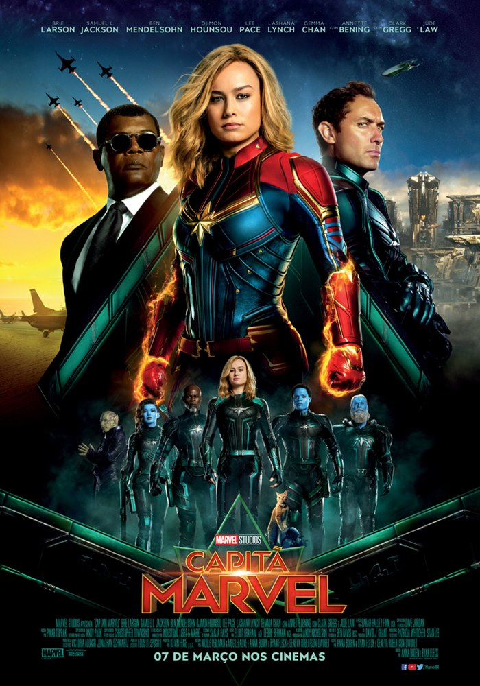
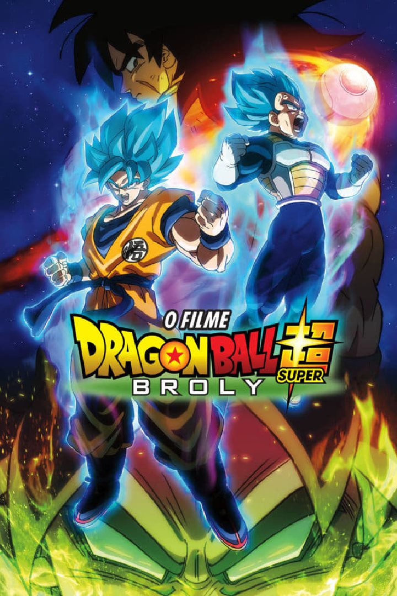
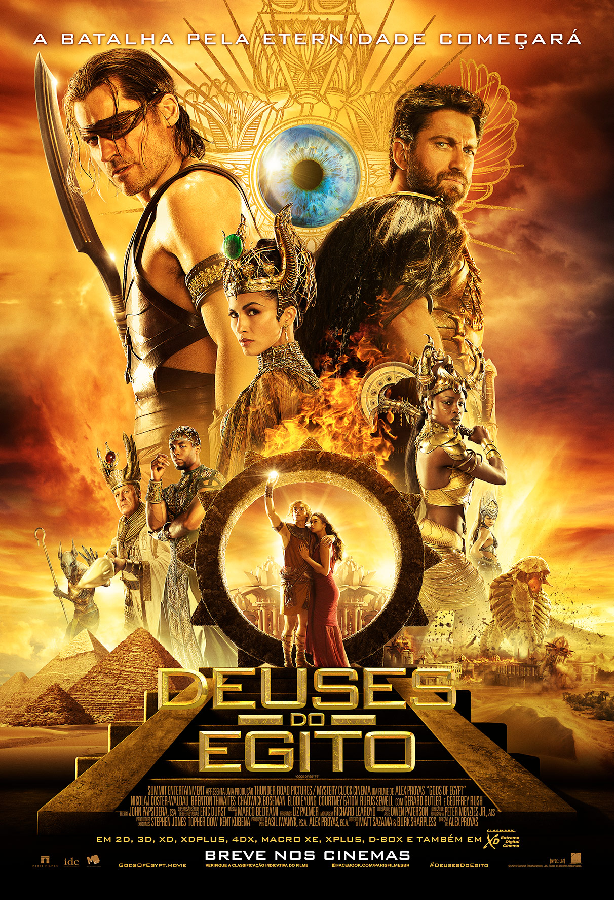
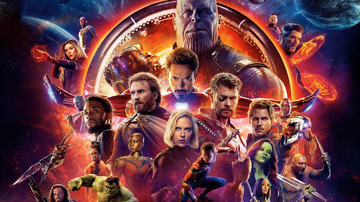
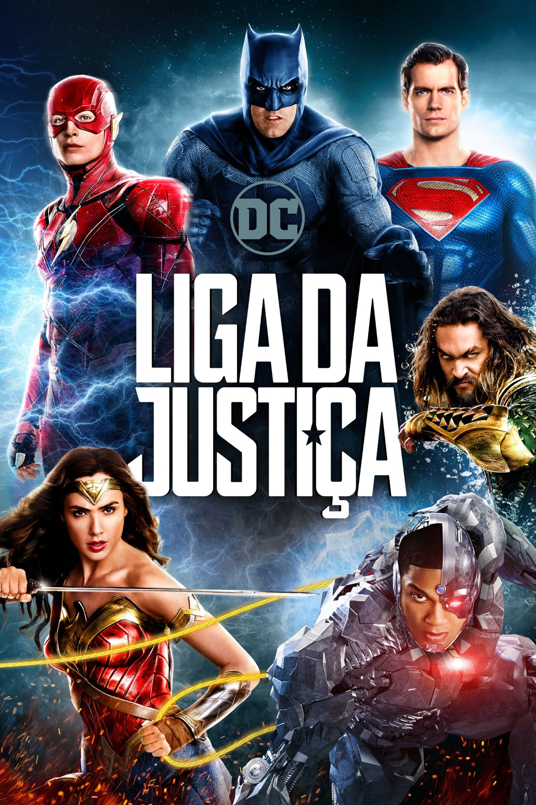
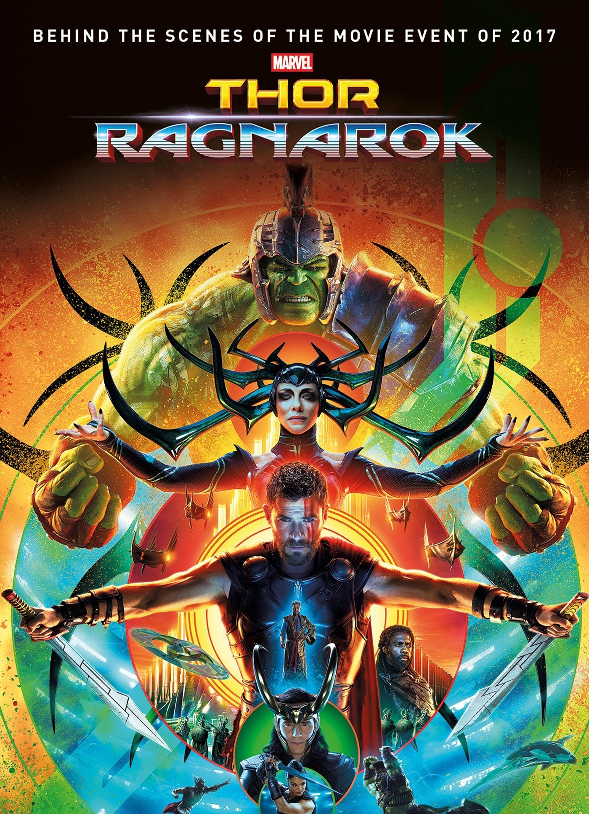
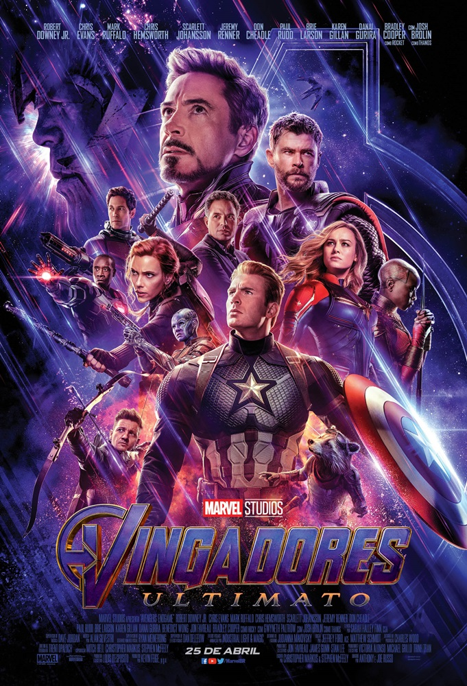

Capitã Marvel
Sinopse Capitã Marvel
Capitã Marvel, parte do exército de elite dos Kree,uma raça alienígena, encontra-se no meio de uma batalha entre
seu povo e os Skrulls. Ao tentar impedir uma invasão de larga escala
na Terra, em 1995, ela tem memórias recorrentes de uma outra vida,
como Carol Danvers, agente da Força Aérea norte-americana.
Com a ajuda de Nick Fury, Capitã Marvel precisa descobrir os
segredos de seu passado e pôr um fim ao conflito intergalático com os Skrulls.
Dragon Ball Z super broly
Sinopse Dragon Ball Z super broly
Apesar da Terra estar em um período de calmaria,Goku se recusa a parar de treinar constantemente. O que ele
não imaginava era que seu novo inimigo seria Broly, um poderoso
super saiyajin sedento por vingança, que deseja destruir
todos que encontrar pela frente.
Deuses do Egito
Sinopse Deuses do Egito
A sobrevivência da humanidade se vê ameaçada quando Set,o impiedoso deus das trevas, apodera-se do trono do Egito e transforma
o próspero Império em um caos. Na esperança de salvar o mundo e resgatar
seu verdadeiro amor, um mortal chamado Bek forma uma improvável aliança
com o poderoso deus Horus. Sua batalha contra Set e seus escudeiros
atravessa o além e os céus para um confronto épico.
Homem-aranha de Volta ao Lar

Sinopse Homem-aranha de Volta ao Lar
Depois de atuar ao lado dos Vingadores, chegou ahora do pequeno Peter Parker voltar para casa e para a sua vida,
já não mais tão normal. Lutando diariamente contra pequenos crimes
nas redondezas, ele pensa ter encontrado a missão de sua vida quando
o terrível vilão Abutre surge amedrontando a cidade. O problema é
que a tarefa não será tão fácil como ele imaginava.
Homem-aranha longe de casa

Sinopse Homem-aranha longe de casa
Peter Parker está em uma viagem de duas semanas pelaEuropa, ao lado de seus amigos de colégio, quando é surpreendido
pela visita de Nick Fury. Convocado para mais uma missão heroica,
ele precisa enfrentar vários vilões que surgem em cidades-símbolo
do continente, como Londres, Paris e Veneza, e também a aparição
do enigmático Mysterio.
Vingadores Guerra Infinita
Sinopse Vingadores Guerra Infinita
Homem de Ferro, Thor, Hulk e os Vingadores se unempara combater seu inimigo mais poderoso, o maligno Thanos. Em
uma missão para coletar todas as seis pedras infinitas, Thanos
planeja usá-las para infligir sua vontade maléfica sobre a realidade.
Liga da justiça
Sinopse Liga da justiça
Impulsionado pela restauração de sua fé na humanidadee inspirado pelo ato altruísta do Superman, Bruce Wayne convoca
sua nova aliada Diana Prince para o combate contra um inimigo
ainda maior, recém-despertado. Juntos, Batman e Mulher-Maravilha
buscam e recrutam com agilidade um time de meta-humanos, mas
mesmo com a formação da liga de heróis sem precedentes, poderá
ser tarde demais para salvar o planeta de um catastrófico ataque.
Thor Ragnarok
Sinopse Thor Ragnarok
Thor está preso do outro lado do universo. Eleprecisa correr contra o tempo para voltar a Asgard e parar
Ragnarok, a destruição de seu mundo, que está nas mãos da
poderosa e implacável vilã Hela.
Vingadores Ultimato
Sinopse Vingadores Ultimato
Após Thanos eliminar metade das criaturas vivas,os Vingadores têm de lidar com a perda de amigos e entes
queridos. Com Tony Stark vagando perdido no espaço sem água
e comida, Steve Rogers e Natasha Romanov lideram a
resistência contra o titã louco.